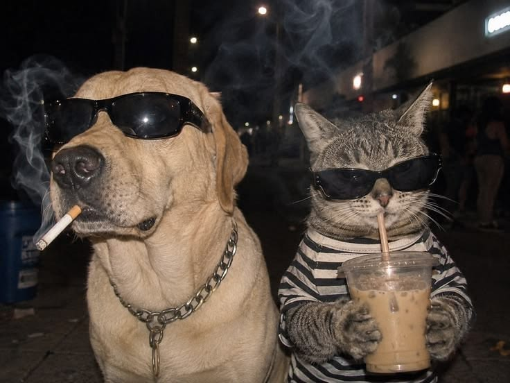

Report with care
Share where you saw an animal and what it may need so rescue teams can review the report.
Report a straySmall acts of care can change an animal's whole story. Safe Paws connects neighbors with stray animals, local shelters, rescue volunteers, and pets ready to meet a family.

Safe Paws gives the community one place to take a caring next step for animals who need help.
Share where you saw an animal and what it may need so rescue teams can review the report.
Report a strayExplore current pet profiles and learn which approved shelter is caring for each animal.
Explore pet profilesConnect with community shelters and volunteers working toward safer, kinder outcomes.
Meet the sheltersEvery animal has a story of their own. Visit the live pet directory for current profiles, photos, shelter information, and availability.
See available petsListings and availability are shown on the live directory.
Local shelters provide a safe place to coordinate care, share pet profiles, and review adoption applications. Explore the directory for currently approved partners and their latest information.
Explore partner sheltersWhether you are looking to adopt or hoping to help an animal in need, take it one step at a time.
Share the animal's location, what you noticed, and an optional photo.
Rescue teams and shelters can review reports and coordinate a response.
Browse current listings and learn about the animals in shelter care.
Send an adoption application through the pet's existing profile.
Sign in to track your application and see updates from the shelter.
Adopt, report an animal, volunteer, or support a shelter. Every caring action matters.